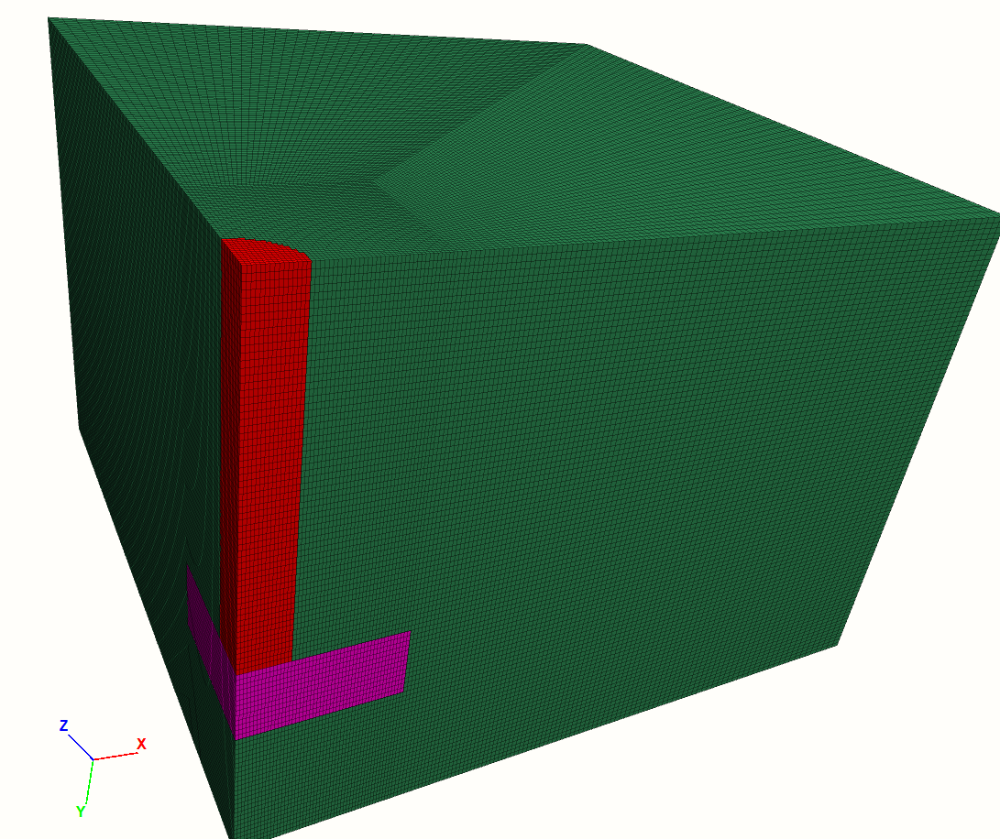
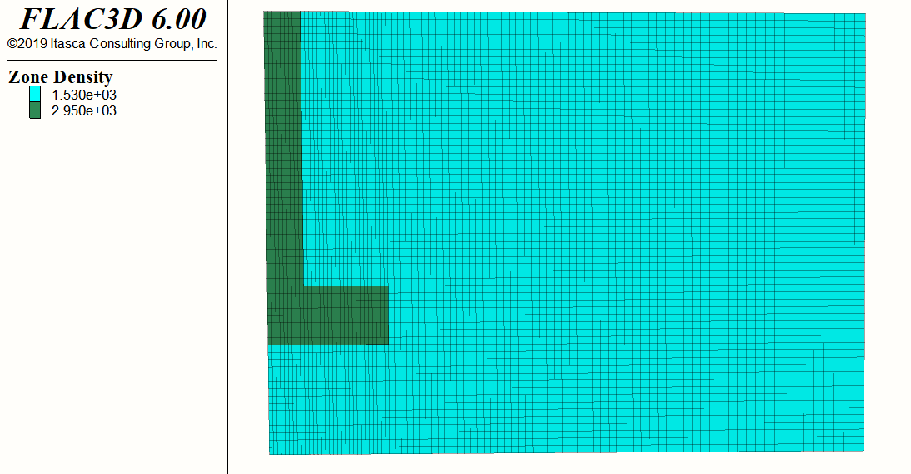

1 KAIST Model
1.1 Initial Configuration
import itasca as it
import numpy as np
np.set_printoptions(threshold=20)
it.command("python-reset-state false")
from itasca import zonearray as za
from itasca import gridpointarray as gpa
########################################
############ PARAMETERS ################
########################################
# Mesh Details
_radial = 20
_perimeter = _radial
_axial = 2*_radial
_outer = 2*_radial
# Physical Constants
_gravity = 9.80665
_K = 0.318
# Dimensions
_D_shaft = 1
_H_shaft = 7.45
_T_plate = 1.5
_B_footing = 3.25
_D_footing = _H_shaft + _T_plate
_B_soil = _B_footing*5
_D_soil = _D_footing
# Concrete Properties
_bulk = 13.9e9
_shear = 10.4e9
_density_concrete = 2950
# Soil Properties
_E_o = 80e6
_const = 1e7
_poisson = 0.25
_density_soil = 1530
# Interface Properties
_stiff_norm = 1e6
_stiff_shear = 1e61.2 Zones

########################################
############### ZONES ##################
########################################
print(" ((((((((((((((((======== NEW RUN ========)))))))))))))))")
command_zone = """
model new
z crea r-t p 0 (0,0,0) ...
p 1 ({B_soil},0,0) ...
p 2 (0,{D_soil},0) ...
p 3 (0,0,{B_soil}) ...
p 4 ({B_soil},{D_soil},0) ...
p 5 (0,{D_soil},{B_soil}) ...
p 6 ({B_soil},0,{B_soil}) ...
p 7 ({B_soil},{D_soil},{B_soil}) ...
p 8 ({B_footing},0,0) ...
p 9 (0,0,{B_footing}) ...
p 10 ({B_footing},{D_soil},0) ...
p 11 (0,{D_soil},{B_footing}) ...
p 12 ({B_footing},0,{B_footing}) ...
p 13 ({B_footing},{D_soil},{B_footing}) ...
size {radial} {axial} {perimeter} {outer} ...
rat 1 1 1 1.01 ...
fill
"""
command = command_zone.format(
B_footing = _B_footing,
B_soil = _B_soil,
D_soil = _D_soil,
radial=_radial,
axial = _axial,
perimeter = _perimeter,
outer = _outer)
it.command(command)
print("radial mesh number is ", _radial)
1.3 Constitutive Model
It is easy to loop over sets of model objects (i.e., zones, gridpoints, structural element nodes, etc.) using the loop foreach construct. In this case, a container of objects must be given by a FISH intrinsic such as zone.list. A practical use of the loop foreach construct is to install a nonlinear initial distribution of elastic moduli in a FLAC3D grid. Suppose that the Young’s modulus at a site is given by this equation:
\[ E = E_0 + c \sqrt{z} \] where \(z\) is the depth below surface, and \(c\) and \(E_0\) are constants. We write a FISH function to install appropriate values of bulk and shear modulus in the grid:
########################################
######## CONSTITUTIVE MODEL ############
########################################
it.command("""
zone cmodel assign elastic range group "Radial Tunnel1"
fish define fname(E_o,const)
loop foreach pnt zone.list
z_depth = zone.pos.y(pnt)
E = E_o+const*math.sqrt(z_depth)
zone.prop(pnt,'young')=E
end_loop
end
@fname({E_o_},{const_})
zone property poisson {poisson_} density {density_soil}
plot item create zone contour property name 'young'
plot item create zone contour property name 'density'
""".format(E_o_=_E_o,const_=_const,poisson_=_poisson,density_soil=_density_soil))
# GROUP #
p = za.pos()
x,y,z = p.T
print(it.zone.count(), "zones in whole model")
shaft = reduce(np.logical_and, (np.sqrt(x**2+z**2)<_D_shaft, y<_H_shaft))
za.set_group(shaft, "shaft")
print(za.in_group("shaft").sum(), "zones in shaft group.")
plate = reduce(np.logical_and, (x<_B_footing,z<_B_footing, y>_H_shaft,y<_D_footing))
za.set_group(plate, "plate")
print(za.in_group("plate").sum(), "zones in plate group.")
it.command("""
zone cmodel assign elastic range group 'shaft'
zone cmodel assign elastic range group 'plate'
zone property bulk {bulk_} shear {shear_} density {density_} range group 'shaft'
zone property bulk {bulk_} shear {shear_} density {density_} range group 'plate'
""".format(bulk_=_bulk,shear_=_shear,density_=_density_concrete))

Strain softening Model is also available, but not implemented:

#it.command("""
#zone cmodel assign strain-softening range group "Radial Tunnel1"
#zone property density 2500 bulk 2e8 shear 1e8 range group "Radial Tunnel1"
#zone property cohesion 2e6 friction 45 tension 2e5 dilation 10 range group "Radial Tunnel1"
#zone property table-friction 'fri' table-cohesion 'coh' table-dilation 'dil' range group "Radial Tunnel1"
#table 'fri' add (0, 45) (.05, 42) (.1, 40) (1, 40)
#table 'coh' add (0,2e6) (.05,1e6) (.1,5e5) (1,5e5)
#table 'dil' add (0, 10) (.05, 3) (.1, 0)
#""")1.4 Interface
########################################
############# INTERFACE ################
########################################
it.command("""
zone interface 'interface 1' create by-face separate range group 'plate' group 'Radial Tunnel1'
zone interface 'interface 1' node property stiffness-normal {stiff_norm_} stiffness-shear {stiff_shear_} friction 35 cohesion 100
zone interface 'interface 2' create by-face separate range group 'shaft' group 'Radial Tunnel1'
zone interface 'interface 2' node property stiffness-normal {stiff_norm_} stiffness-shear {stiff_shear_} friction 35 cohesion 100
""".format(stiff_norm_=_stiff_norm, stiff_shear_=_stiff_shear))
print(" ======== PASSED INTERFACE ========")
1.5 Boundary Conditions
########################################
######## BOUNDARY CONDITIONS ###########
########################################
it.command("""
zone face skin
zone face apply velocity-normal 0 ...
range group 'North1' or 'East3' or 'Bottom5' or 'East5' or ...
'West1' or 'Bottom6' or 'Bottom7' or 'Bottom3' or 'West3' or 'West4' or ...
'Top6' or 'Bottom4' or 'West6' or 'West7' or 'Top5' or 'West5' or ...
'East4' or 'Top3' or 'Bottom1' or 'East6' or 'East2' or 'Top1' or ...
'East1' or 'West2' or 'Top2' or 'Bottom2' or 'Top4' or 'North2'
zone face apply velocity (0,0,0) range group 'North3'
""")1.6 Initial Equilibrium
########################################
############# INITILIZE ################
########################################
it.command("""
model gravity 0 {gravity_} 0
zone initialize-stress ratio {K_}
zone interface 'interface 1' node initialize-stresses
zone interface 'interface 2' node initialize-stresses
""".format(gravity_=_gravity, K_ = _K))
it.command("""
zone ratio local
model solve ratio 1e-4
model save 'initial'
""")
print(" ======== PASSED INITIAL EQUILIBRIUM ========")
1.6.1 Vimeo Embedding
1.7 Vertical Loading
########################################
########## VERTICAL LOADING ############
########################################
#top = reduce(np.logical_and, (np.sqrt(x**2+z**2)<_D_shaft, y<=np.amin(y)))
#za.set_group(top, "top")
#print(za.in_group("top").sum(), "zones in top group.")
it.command("""
zone initialize state 0
zone gridpoint initialize displacement (0,0,0)
zone gridpoint initialize velocity (0,0,0)
table 'ramp' add ([global.step],0) ([global.step+5000],1e-6) ...
([global.step+10000],1e-6) ; Increase velocity applied to pile
; over 5,000 steps
; zone face apply velocity-normal 1 table 'ramp' range group ...
; 'Top2' or 'East4' or 'East3' or 'North2' or 'Bottom6' or ...
; 'West6' or 'Top3' or 'Top1' or 'Top4' or 'East1' or ...
; 'Top5' or 'East2' or 'East5' or 'South1' or 'South2'
zone face apply velocity-normal 1e-5 range group 'South1'
; Set up histories for monitoring model behavior
history interval 10
zone history name 'disp' displacement-y position (0,0,0)
; find gridpoints at pile cap, store in map called cap
;fish define find_cap
; global cap = map
; loop foreach local gp gp.list
; if gp.isgroup(gp,'top') then
; cap(gp.id(gp)) = gp
; endif
; endloop
;end
;fish history name 'cap' @find_cap
;
;fish define vert_load
; local yftot = 0.0
; loop foreach gp cap
; yftot = yftot + gp.force.unbal.y(gp)
; end_loop
; vert_load = yftot / (0.25*{D_shaft_}*{D_shaft_}*math.pi)
;end
;
;fish history name 'load' @vert_load
;zone mechanical damping combined
model largestrain true
model step 10000
model save 'vertical-loading'
""")
print(" ======== PASSED VERTICAL LOADING ========")1.7.1 Vimeo Embedding
1.8 Plot
########################################
################ PLOT ##################
########################################
it.command("""
plot create
plot item create zone label group
plot create
plot item create zone contour property name 'young'
plot create
plot item create zone label density
plot create
plot item create zone active on ...
contour Displacement
""")
print(" ======== PASSED PLOT ========")1.9 Results
# ==================================================================
# IPython Consol Output
# ==================================================================
======== BEGIN A NEW RUN ========
(80000, 'zones in whole model')
(750, 'zones in shaft group.')
(2000, 'zones in plate group.')
======== PASSED PROPERTIES SETTING ========
======== PASSED INTERFACE SETTING ========
(2000, 'zones in bottom group.')
(2000, 'zones in up group.')
(800, 'zones in x_side group.')
(800, 'zones in z_side group.')
(800, 'zones in x_side_end group.')
(800, 'zones in z_side_end group.')
======== PASSED BOUNDARY AND INITIAL CONDITIONS ========
======== PASSED VERTICAL LOADING 1 ========
======== PASSED VERTICAL LOADING 2 ========
======== PASSED DEFINING ALL FISH FUNCTIONS ========
======== PASSED ALL SCRIPTS SUCCESSFULLY ========
# ==================================================================
# FISH Consol Output
# ==================================================================
flac3d>python-reset-state false
flac3d>model new
flac3d>model deterministic on
flac3d>model precision 6
flac3d>model random 10000
flac3d>z crea r-t p 0 (0,0,0) ...
flac3d> p 1 (16.25,0,0) ...
flac3d> p 2 (0,11.95,0) ...
flac3d> p 3 (0,0,16.25) ...
flac3d> p 4 (16.25,11.95,0) ...
flac3d> p 5 (0,11.95,16.25) ...
flac3d> p 6 (16.25,0,16.25) ...
flac3d> p 7 (16.25,11.95,16.25) ...
flac3d> p 8 (3.25,0,0) ...
flac3d> p 9 (0,0,3.25) ...
flac3d> p 10 (3.25,11.95,0) ...
flac3d> p 11 (0,11.95,3.25) ...
flac3d> p 12 (3.25,0,3.25) ...
flac3d> p 13 (3.25,11.95,3.25) ...
flac3d> size 20 40 20 40 ...
flac3d> rat 1 1 1 1.01 ...
flac3d> fill
flac3d>zone cmodel assign elastic range group "Radial Tunnel1"
flac3d>fish define fname(E_o,const)
Def>loop foreach pnt zone.list
Def>z_depth = zone.pos.y(pnt)
Def>E = E_o+const*math.sqrt(z_depth)
Def>zone.prop(pnt,'young')=E
Def>end_loop
Def>end
flac3d>@fname(10000000.0,100000000.0)
flac3d>zone property poisson 0.25 density 1530
--- Property poisson set in 80000 zones using the elastic model.
flac3d>plot item create zone contour property name 'young'
flac3d>plot item create zone contour property name 'density'
flac3d>zone cmodel assign elastic range group 'shaft'
flac3d>zone cmodel assign elastic range group 'plate'
flac3d>zone property bulk 13900000000.0 shear 10400000000.0 density 2950 range group 'shaft'
--- Property bulk set in 750 zones using the elastic model.
--- Property shear set in 750 zones using the elastic model.
flac3d>zone property bulk 13900000000.0 shear 10400000000.0 density 2950 range group 'plate'
--- Property bulk set in 2000 zones using the elastic model.
--- Property shear set in 2000 zones using the elastic model.
flac3d>zone interface 'interface 1' create by-face separate range group 'plate' group 'Radial Tunnel1'
--- 1003 gridpoints duplicated, 1940 surface faces created.
--- 13 gridpoints skipped on internal edge.
--- 970 faces on one side were assigned the group name Interface 1 in slot Interface.
flac3d>zone interface 'interface 1' node property stiffness-normal 100000000.0 stiffness-shear 100000000.0 friction 20 cohesion 30000
--- Property Normal Stiffness set in 1016 interface 1 nodes.
--- Property Shear Stiffness set in 1016 interface 1 nodes.
--- Property Friction set in 1016 interface 1 nodes.
--- Property Cohesion set in 1016 interface 1 nodes.
flac3d>zone interface 'interface 2' create by-face separate range group 'shaft' group 'Radial Tunnel1'
--- 338 gridpoints duplicated, 600 surface faces created.
--- 300 faces on one side were assigned the group name Interface 2 in slot Interface.
flac3d>zone interface 'interface 2' node property stiffness-normal 100000000.0 stiffness-shear 100000000.0 friction 20 cohesion 30000
--- Property Normal Stiffness set in 338 interface 2 nodes.
--- Property Shear Stiffness set in 338 interface 2 nodes.
--- Property Friction set in 338 interface 2 nodes.
--- Property Cohesion set in 338 interface 2 nodes.
flac3d>zone face apply velocity-normal 0 range group 'bottom'
--- Apply conditions added to 2081 gridpoints.
flac3d>zone face apply velocity-normal 0 range group 'x_side' or 'z_side'
--- 41 gridpoints with conflicting conditions had those conditions removed.
--- Apply conditions added to 2124 gridpoints.
flac3d>zone face apply velocity-normal 0 range group 'x_side_end' or 'z_side_end'
--- 41 gridpoints with conflicting conditions had those conditions removed.
--- Apply conditions added to 1841 gridpoints.
flac3d>model gravity 0 9.80665 0
--- Gravity has been set to: ( 0.000000e+00 9.806650e+00 0.000000e+00).
flac3d>zone initialize-stress ratio 0.318
--- Stresses initialized in 80000 zones.
flac3d>zone interface 'interface 1' node initialize-stresses
--- Initial stress state set in 1016 interface nodes.
flac3d>zone interface 'interface 2' node initialize-stresses
--- Initial stress state set in 338 interface nodes.
flac3d>zone ratio local
flac3d>model solve ratio 1e-4
Cycle Total Mech Ratio Clock
--------- ---------- ---------- -----------
8857 8857 9.9831e-05 00:00:03:36
1.0000e-04
--- Limit ratio of 1.0000e-04 met in process(es): mech Zone Main (9.9831e-05),mech Struct Main (3.4811e-06).
--- Cycling ended at: 2021-09-20 16:37:35
flac3d>model save 'initial'
--- Model saved to file C:/Users/kyeongsunkim/Desktop/FLAC_WORKING_DIRECTORY/13_KAIST_vertical_loading_0920/initial.f3sav.
flac3d>zone initialize state 0
--- state modified in 80000 zones.
flac3d>zone gridpoint initialize displacement (0,0,0)
--- displacement modified in 86662 gridpoints.
flac3d>zone gridpoint initialize velocity (0,0,0)
--- velocity modified in 86662 gridpoints.
flac3d>table 'ramp' add ([global.step],0) ([global.step+30000],-5e-8) ...
flac3d> ([global.step+58000],-5e-8) ; Increase velocity applied to pile
--- The table with name ramp was created and 3 values were added.
flac3d> ; over 30,000 steps
flac3d>zone face apply velocity-normal 1 table 'ramp' range group 'top'
--- 39 gridpoints with conflicting conditions had those conditions removed.
--- Apply conditions added to 67 gridpoints.
flac3d>history interval 250
flac3d>zone history name 'disp' displacement-y position (0,0,0)
--- Created history disp Y Displacement at (0,0,0)
flac3d>; =========================================================
flac3d>; find gridpoints at pile cap, store in map called cap
flac3d>fish define find_cap
Def> global cap = map
Def> loop foreach local gp gp.list
Def> if gp.isgroup(gp,'top') then
Def> cap(gp.id(gp)) = gp
Def> endif
Def> endloop
Def>end
flac3d>@find_cap
flac3d>; =========================================================
flac3d>; monitor vertical loading at pile cap
flac3d>fish define vert_load
Def> local yftot = 0.0
Def> loop foreach gp cap
Def> yftot = yftot + gp.force.unbal.y(gp)
Def> end_loop
Def> vert_load = yftot / (0.25*1*1*math.pi)
Def>end
flac3d>;call 'load'
flac3d>; =========================================================
flac3d>fish history name 'load' @vert_load
--- Created history load
flac3d>zone mechanical damping combined
flac3d>model step 58000
Cycle Total Clock
--------- ---------- -----------
58000 66857 00:00:22:18
58000
--- Global cycle limit of 58000 met.
--- Cycling ended at: 2021-09-20 16:59:55
flac3d>model save 'vertical-loading'
--- Model saved to file C:/Users/kyeongsunkim/Desktop/FLAC_WORKING_DIRECTORY/13_KAIST_vertical_loading_0920/vertical-loading.f3sav.
flac3d>; vertical loading
flac3d>model restore 'initial'
********************************************
Save file created by FLAC3D 6.00.69.0
on ? 9 20 16:37:35 2021
Total Cycles: 8857 Super Cycles: 8857
Title:
Customer:
:
********************************************
flac3d>zone initialize state 0
--- state modified in 80000 zones.
flac3d>zone gridpoint initialize displacement (0,0,0)
--- displacement modified in 86662 gridpoints.
flac3d>zone gridpoint initialize velocity (0,0,0)
--- velocity modified in 86662 gridpoints.
flac3d>zone face apply stress-yy [1.0e5/(math.pi*1*1)] range group 'top'
+++ No apply conditions created.
flac3d>model solve ratio 1e-4
Cycle Total Mech Ratio Clock
--------- ---------- ---------- -----------
1 8858 9.9831e-05 00:00:00:00
1.0000e-04
--- Limit ratio of 1.0000e-04 met in process(es): mech Zone Main (9.9831e-05),mech Struct Main (3.4811e-06).
--- Cycling ended at: 2021-09-20 16:59:57
flac3d>model save 'vertical-load-end'
--- Model saved to file C:/Users/kyeongsunkim/Desktop/FLAC_WORKING_DIRECTORY/13_KAIST_vertical_loading_0920/vertical-load-end.f3sav.
flac3d>fish define make_pydata
Def> global pile = map
Def> ; Build list of nodes
Def> loop foreach local ipnt inter.list
Def> loop foreach node inter.node.list(ipnt)
Def> local y = inter.node.pos.y(node)
Def> local key = math.round(inter.node.pos.y(node) * 1.0)
Def> if map.has(pile,key) == false then
Def> local level = map
Def> local nodes = map
Def> level('y') = y
Def> level('gp') = gp.near(0,y,0,'pile')
Def> level('nodes') = nodes
Def> level('length') = 0.0
Def> pile(key) = level
Def> endif
Def> level = pile(key)
Def> nodes = level('nodes')
Def> nodes(map.size(nodes)) = node
Def> level('nodes') = nodes
Def> pile(key) = level
Def> end_loop
Def> end_loop
Def> ; Calculate length of ownership of each segment
Def> local prev_key = '0'
Def> loop foreach key map.keys(pile)
Def> if type.name(prev_key) == 'integer' then
Def> local levelp = pile(prev_key)
Def> local leveln = pile(key)
Def> local dist = math.abs(gp.pos.y(levelp('gp')) - gp.pos.y(leveln('gp'))) * 0.5
Def> levelp('length') = levelp('length') + dist
Def> leveln('length') = leveln('length') + dist
Def> pile(prev_key) = levelp
Def> pile(key) = leveln
Def> endif
Def> prev_key = key
Def> end_loop
Def>end
flac3d>; Output resulting data structure...
flac3d>fish define output_structure
Def> loop foreach local level pile
Def> io.out('Y-Position ' + string(level('y')))
Def> io.out('Length ' + string(level('length')))
Def> io.out('GP ' + string(gp.id(level('gp'))))
Def> local nodelist = ''
Def> loop foreach local node level('nodes')
Def> nodelist = nodelist + ' ' + string(interface.node.id(node))
Def> end_loop
Def> io.out('Nodes'+nodelist)
Def> end_loop
Def>end
flac3d>fish define tot_reac
Def> local total = 0.0
Def> loop foreach local key map.keys(pile)
Def> local level = pile(key)
Def> local accum = 0.0
Def> loop foreach local node level('nodes')
Def> local area = 2.0 * interface.node.area(node)
Def> local norm = zone.face.normal(inter.node.target.zone(node),inter.node.target.face(node))
Def> local xnstress = inter.node.stress.normal(node) * norm->x * -1.0
Def> local xsstress = inter.node.stress.shear.x(node)
Def> accum = accum + (xnstress + xsstress) * area
Def> end_loop
Def> local xdis = gp.disp.x(level('gp'))
Def> total = total + accum
Def> table(string(key),xdis) = accum/level('length')
Def> end_loop
Def> tot_reac = total
Def>end
flac3d>@make_pydata ; Generate p-y curve calculation data
flac3d>@output_structure ; Sanity check of p-y curve data
Y-Position 0
Length 0.29875
GP 68922
Nodes 1 2 3 4 53 54 79 80 81 82 131 132 133 134 183 184 185 186 235 236 237 238 239 240 241 242
Y-Position 0.5975
Length 0.89625
GP 69002
Nodes 5 6 7 8 9 10 11 12 55 56 57 58 83 84 85 86 87 88 89 90 135 136 137 138 139 140 141 142 187 188 189 190 191 192 193 194 243 244 245 246 247 248 249 250 251 252 253 254 255 256 257 258
Y-Position 1.7925
Length 1.04562
GP 69162
Nodes 13 14 15 16 17 18 59 60 61 91 92 93 94 95 96 143 144 145 146 147 148 195 196 197 198 199 200 259 260 261 262 263 264 265 266 267 268 269 270
Y-Position 2.68875
Length 0.89625
GP 69282
Nodes 19 20 21 22 23 24 62 63 64 97 98 99 100 101 102 149 150 151 152 153 154 201 202 203 204 205 206 271 272 273 274 275 276 277 278 279 280 281 282
Y-Position 3.585
Length 1.04563
GP 69402
Nodes 25 26 27 28 29 30 31 32 65 66 67 68 103 104 105 106 107 108 109 110 155 156 157 158 159 160 161 162 207 208 209 210 211 212 213 214 283 284 285 286 287 288 289 290 291 292 293 294 295 296 297 298
Y-Position 4.78
Length 1.04563
GP 69562
Nodes 33 34 35 36 37 38 69 70 71 111 112 113 114 115 116 163 164 165 166 167 168 215 216 217 218 219 220 299 300 301 302 303 304 305 306 307 308 309 310
Y-Position 5.67625
Length 1.34437
GP 69682
Nodes 39 40 41 42 43 44 72 73 74 117 118 119 120 121 122 169 170 171 172 173 174 221 222 223 224 225 226 311 312 313 314 315 316 317 318 319 320 321 322
Y-Position 7.46875
Length 1.04563
GP 69922
Nodes 1 4 6 8 10 12 14 16 18 20 22 24 26 28 30 32 34 36 38 40 42 127 130 139 145 151 157 163 169 175 181 187 193 199 205 211 217 223 229 235 242 247 248 249 250 251 252 253 254 255 256 257 258 259 260 261 262 263 264 265 266 267 268 269 270 271 272 273 274 315 316 317 318 319 320 321 322 323 324 325 326 327 328 349 350 351 352 353 354 355 356 357 358 359 360 361 362 383 384 385 386 387 388 389 390 391 392 393 394 395 396 397 398 419 420 421 422 423 424 425 426 427 428 429 430 431 432 433 434 435 456 457 458 459 460 461 462 463 464 465 466 467 468 469 470 471 472 473 494 495 496 497 498 499 500 501 502 503 504 505 506 507 508 509 510 511 512 513 514 515 516 537 538 539 540 541 542 543 544 545 546 547 548 549 550 551 552 553 554 555 556 577 578 579 580 581 582 583 584 585 586 587 588 589 590 591 592 593 594 595 596 617 618 619 620 621 622 623 624 625 626 627 628 629 630 631 632 633 634 635 636 657 658 659 660 661 662 663 664 665 666 667 668 669 670 671 672 673 674 675 676 697 698 699 700 701 702 703 704 705 706 707 708 709 710 711 712 713 714 715 716 737 738 739 740 741 742 743 744 745 746 747 748 749 750 751 752 753 754 755 756 777 778 779 780 781 782 783 784 785 786 787 788 789 790 791 792 793 794 795 796 817 818 819 820 821 822 823 824 825 826 827 828 829 830 831 832 833 834 835 836 857 858 859 860 861 862 863 864 865 866 867 868 869 870 871 872 873 874 875 876 897 898 899 900 901 902 903 904 905 906 907 908 909 910 911 912 913 914 915 916 937 938 939 940 941 942 943 944 945 946 947 948 949 950 951 952 953 954 955 956 977 978 979 980 981 982 983 984 985 986 987 988 989 990 991 992 993 994 995 996 45 46 47 48 49 50 51 52 75 76 77 78 123 124 125 126 127 128 129 130 175 176 177 178 179 180 181 182 227 228 229 230 231 232 233 234 323 324 325 326 327 328 329 330 331 332 333 334 335 336 337 338
Y-Position 7.7675
Length 0.5975
GP 69962
Nodes 2 3 5 7 9 11 13 15 17 19 21 23 25 27 29 31 33 35 37 39 41 43 44 45 46 47 48 49 50 51 52 53 54 55 56 57 58 59 60 61 62 63 64 65 66 67 68 69 70 71 72 73 74 75 76 77 78 79 80 81 82 83 84 128 129 131 132 133 134 140 141 142 146 147 148 152 153 154 158 159 160 164 165 166 170 171 172 176 177 178 182 183 184 188 189 190 194 195 196 200 201 202 206 207 208 212 213 214 218 219 220 224 225 226 230 231 232 236 237 238 241 243 244
Y-Position 8.66375
Length 0.448125
GP 70082
Nodes 85 86 87 88 89 90 91 92 93 94 95 96 97 98 99 100 101 102 103 104 105 106 107 108 109 110 111 112 113 114 115 116 117 118 119 120 121 122 123 124 125 126 135 136 137 138 143 144 149 150 155 156 161 162 167 168 173 174 179 180 185 186 191 192 197 198 203 204 209 210 215 216 221 222 227 228 233 234 239 240 245 246 275 276 277 278 279 280 281 282 283 284 285 286 287 288 289 290 291 292 293 294 295 296 297 298 299 300 301 302 303 304 305 306 307 308 309 310 311 312 313 314 329 330 331 332 333 334 335 336 337 338 339 340 341 342 343 344 345 346 347 348 363 364 365 366 367 368 369 370 371 372 373 374 375 376 377 378 379 380 381 382 399 400 401 402 403 404 405 406 407 408 409 410 411 412 413 414 415 416 417 418 436 437 438 439 440 441 442 443 444 445 446 447 448 449 450 451 452 453 454 455 474 475 476 477 478 479 480 481 482 483 484 485 486 487 488 489 490 491 492 493 517 518 519 520 521 522 523 524 525 526 527 528 529 530 531 532 533 534 535 536 557 558 559 560 561 562 563 564 565 566 567 568 569 570 571 572 573 574 575 576 597 598 599 600 601 602 603 604 605 606 607 608 609 610 611 612 613 614 615 616 637 638 639 640 641 642 643 644 645 646 647 648 649 650 651 652 653 654 655 656 677 678 679 680 681 682 683 684 685 686 687 688 689 690 691 692 693 694 695 696 717 718 719 720 721 722 723 724 725 726 727 728 729 730 731 732 733 734 735 736 757 758 759 760 761 762 763 764 765 766 767 768 769 770 771 772 773 774 775 776 797 798 799 800 801 802 803 804 805 806 807 808 809 810 811 812 813 814 815 816 837 838 839 840 841 842 843 844 845 846 847 848 849 850 851 852 853 854 855 856 877 878 879 880 881 882 883 884 885 886 887 888 889 890 891 892 893 894 895 896 917 918 919 920 921 922 923 924 925 926 927 928 929 930 931 932 933 934 935 936 957 958 959 960 961 962 963 964 965 966 967 968 969 970 971 972 973 974 975 976 997 998 999 1000 1001 1002 1003 1004 1005 1006 1007 1008 1009 1010 1011 1012 1013 1014 1015 1016
flac3d>fish history name 'load' @tot_reac
--- Created history load
flac3d>model step 416500
Cycle Total Clock
--------- ---------- -----------
416500 425358 00:02:34:51
416500
--- Global cycle limit of 416500 met.
--- Cycling ended at: 2021-09-20 19:34:50
flac3d>model save 'lateral-load'
--- Model saved to file C:/Users/kyeongsunkim/Desktop/FLAC_WORKING_DIRECTORY/13_KAIST_vertical_loading_0920/lateral-load.f3sav.